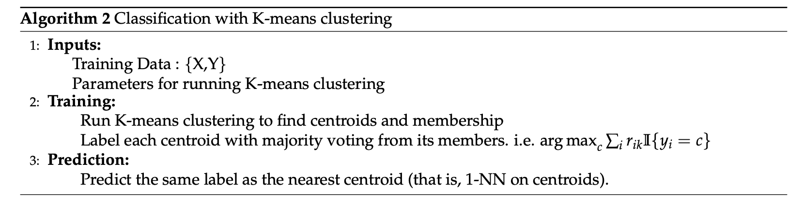
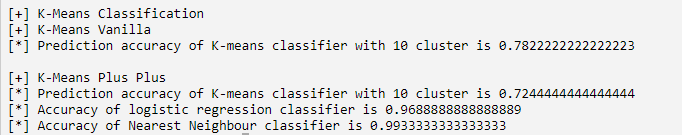

K-means Clustering (50 points)
General instructions
- In this task you will implement the K-means algorithm and its applications. We provide the bootstrap code and you are expected to complete the functions.
- Do not import libraries other than those already imported in the original code.
- Please follow the type annotations. You have to make the function’s return values match the required type.
- Only modifications in files {
kmeans.py} in the "work" directory will be accepted and graded. All other modifications will be ignored. You can work directly on Vocareum, or download all files from "work", code in your own workspace, and then upload the changes (recommended). - Click the Submit button when you are ready to submit your code for auto-grading. Your final grade is determined by your last submission.
High Level Description
In this assignment you are asked to implement:
- the K-means++ initialization,
- the standard K-means algorithm given the initialization,
- the nearest neighbor algorithm using the K-means centroids,
- image compression via the K-means algorithm.
NOTE: Depending on your environment you may need to install the python library named "pillow", which is used by matplotlib to process some of the images needed for this assignment. You can install it by running "pip3 install pillow" in your command line.
Q1. K-means++ initialization
K-means++ generally performs much better than the vanilla K-means algorithm. The only difference is in the initialization of the centroids. According to the discussions in the lecture, implement this initialization in functionget_k_means_plus_plus_center_indices.
(Note that we also provide the vanilla initialization method in get_lloyd_k_means.)
Q2. K-means algorithm
Recall that for a dataset , the K-means distortion objective is:
where are centroids of the K clusters and represents whether example n belongs to cluster k.
In this part, you need to implement the K-means procedure that iteratively computes the new cluster centroids and assigns data points to the new clusters.
The procedure stops whenever 1) the number of updates has reached the given maximum number, or 2) when the *average* K-means distortion objective J changes less than a given threshold between two iterations.
Implement this part in the fitfunction of the class KMeans.
While assigning a sample to a cluster, if there is a tie (i.e. the sample is equidistant from two or more centroids), you should choose the one with the smaller index (which is what numpy.argmin does already).
After you complete the implementation, run KmeansTest.py to see the results of this on a toy
dataset. You should be able to see three images generated in a folder called plots. In particular, you can see
toy_dataset_predicted_labels.png and toy_dataset_real_labels.png,
and compare the clusters identified by the algorithm against the real clusters. Your implementation should be able to recover the correct clusters sufficiently well. Representative images are shown below. Red dots are cluster centroids.
Note that color coding of recovered clusters may not match that of correct clusters. This is due to mis-match
in ordering the retrieved clusters and the correct clusters (which is fine).

Q3 Classification with K-means
Another application of clustering is to obtain a faster version of the nearest neighbor algorithm. Recall that nearest neighbor evaluates the distance of a test sample from every training point to predict its label, which can be very slow. Instead, we can compress the entire training dataset to just K centroids, where each centroid is now labeled as the majority class of the corresponding cluster. After this compression the prediction time of nearest neighbor is reduced from O(N) to just O(K) (see below for the pseudocode).

You need to complete the fit and predict function in KMeansClassifier following the comments in the code.
Again, whenever you need to break a tie, pick the one with the smallest index.
Once completed,
run KmeansTest.py again to evaluate the classifier on a test set (digits). For comparison, the script will also print accuracy of a logistic classifier and a vanilla nearest neighbor classifier.
An example is shown below.

Q4 Image compression with K-means
In this part, we will take lossy image compression as another application of clustering. The idea is simply to treat each pixel of an image as a point, then perform K-means algorithm to cluster these points, and finally replace each pixel with its closest centroid.
What you need to implement is to compress an image with K centroids given (called code_vectors). Specifically, complete the
function transform_image following the comments in the code.
After your implementation, run KmeansTest.py again. You should be able to see an image compressed_baboon.png in the plots folder. You can see that this image is slightly distorted as compared to the original baboon.tiff.
The ideal result should take about 35-40 iterations and the Mean Square Error (between the two images) should be less than 0.0098. It takes about 1-2 minutes to complete normally.
Grading Guidelines:
- get_k_means_plus_plus_center_indices - 5 points (5 test cases)
- Kmeans class - 15 points (5 test cases)
- KmeansClassifier class - 20 points (4 test cases)
- transform_image - 10 points (2 test cases)